Regarding my final project this will give an outline of the final solution I came up with. So in terms of the final project through the project prep week, I was able to have a final touch sensor that I have built using the similar methodology from the previous component. The only difference in this case is that I had make two thin plastic layer copies and pasted them ontop of each other, and then applied the same conductive layer on top using velostat by heat pressing the actual component with glue on top. From there, I cut it up to make it look nice so it can go in the middle of the actual component.
Once I had my sensor built I had to make the rest of the actual component. So this is when I started cadding up ideas for the actual design of the component. I had first come up with a failed cad idea that would potentially be using snap fits, but then I quickly realized how inefficient or time costing this would be because its easier to get an open design out first before actually encasing it before actually knowing it works:
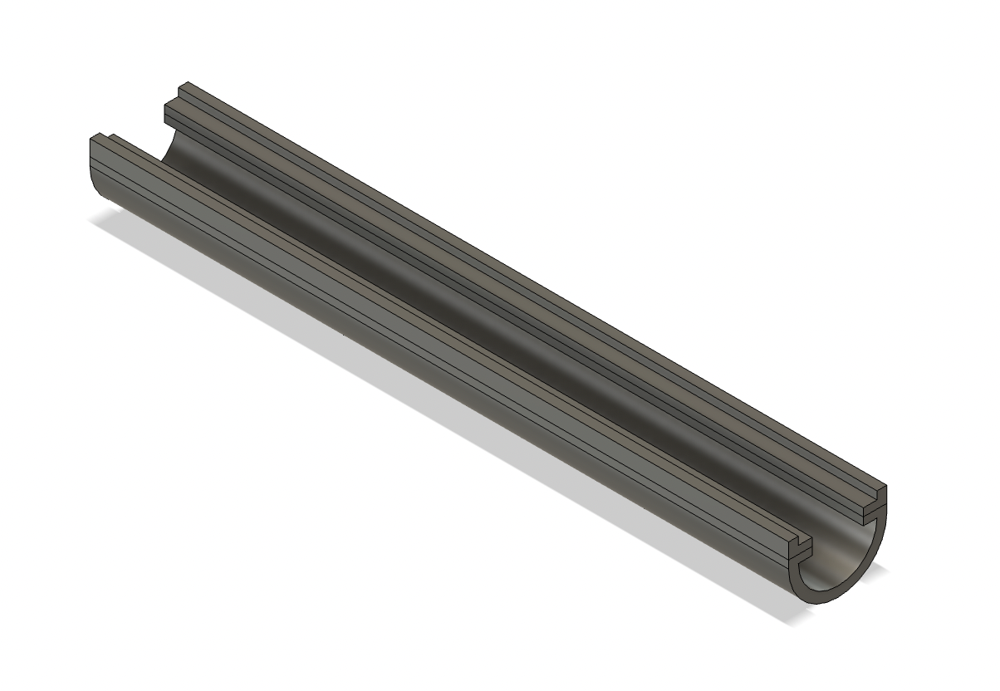 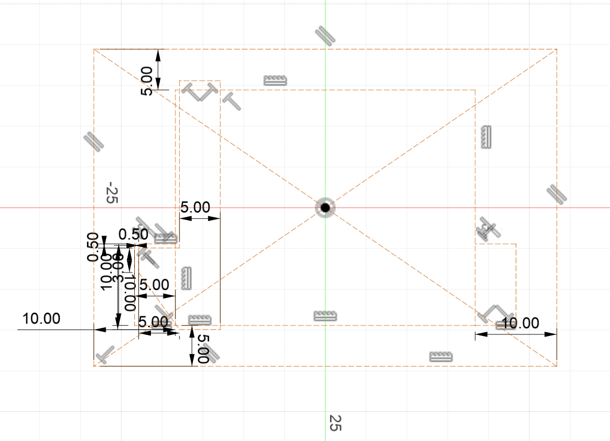From there I started to ideate more on the idea, so I decided to think about first how my component would work in a general sense. In that given case I thought about how I would best power my ESP32 XIAO C3 which is the primary controller I would use for this project. One big idea for the project was to really focus on minimizing the size of the project so that it can be handheld, so I used a small ESP32 to work on this goal. However, I also very quickly realized a few limitations with this idea:
One first limitation is really finding out the best way to power the board. So powering the board separately would require me to make sure that it receives enough voltage, so I would need around 4.7V to be fed into such a small component to get it to work for my speaker and also the resistor sensor. In that case, I decided to make use of one of the coin battery slots to see if it could work. As such one of my first designs was really just a layer to build this out:
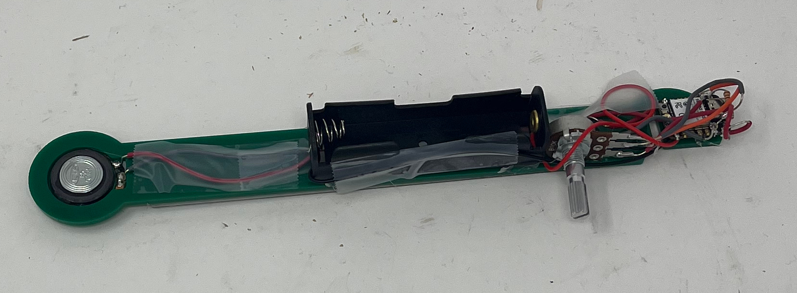
I quickly found out that the actual coin slot bettery doesn't work that well, and actually doesn't even provide enough voltage. It provides around 3.7 V and I needed around 4.7 V. Regardless, I moved on and decided to come up with another way to power it which was by using big blocky batteries that somewhat ended up working in my favor.
After coming up with a way to power the ESP32 XIAO C3, I then started to connect wires I knew that needed to be connected, such as the wires that connect the potentiometer to the analog pin, and also wires that control the sound output, and finally wires that would need to be connected to the actual resistance sensor. This would require a complete design, so this is what I had cadded in Fusion360:
 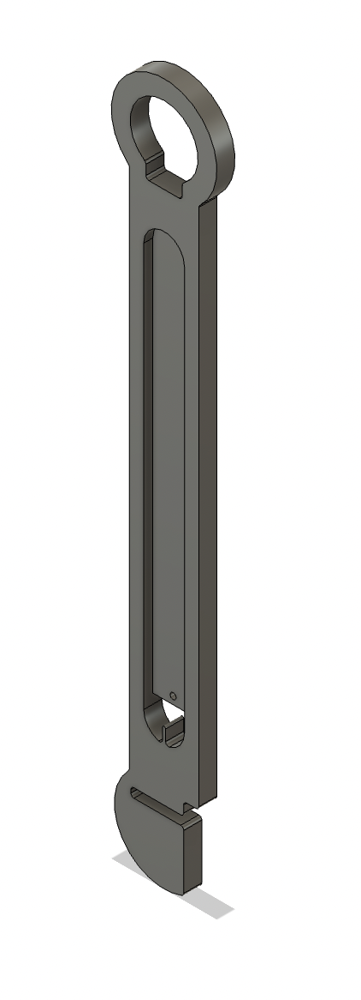
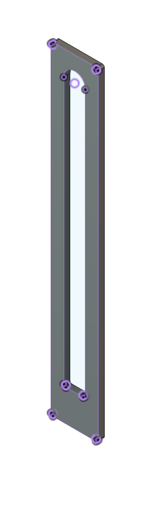
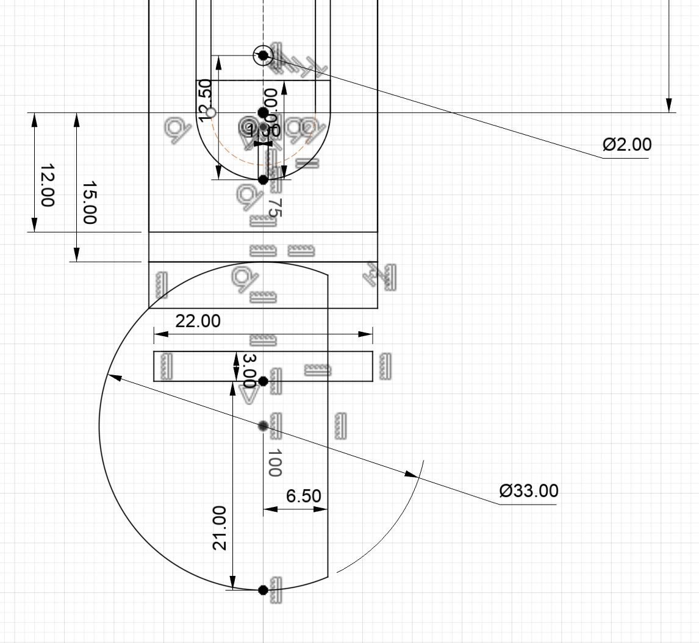
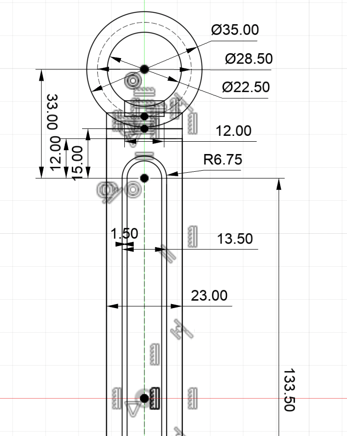
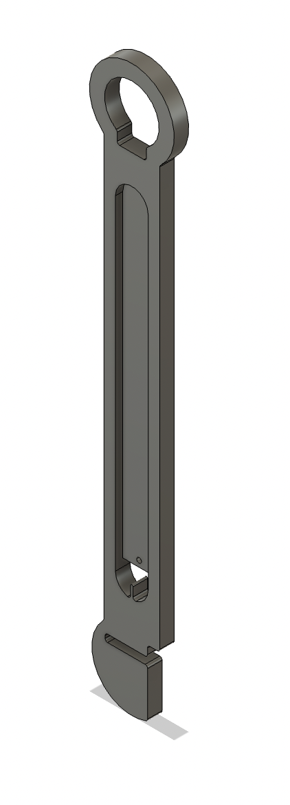
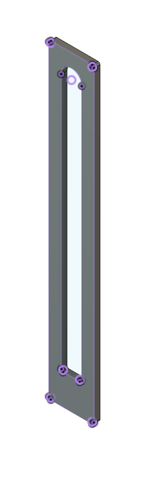
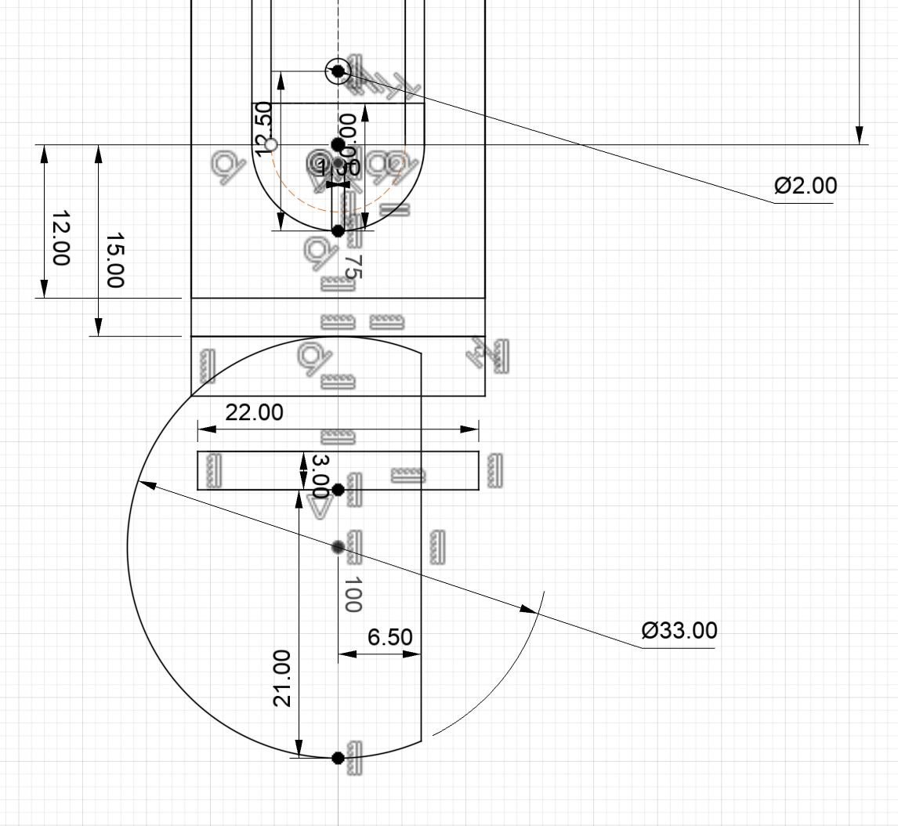
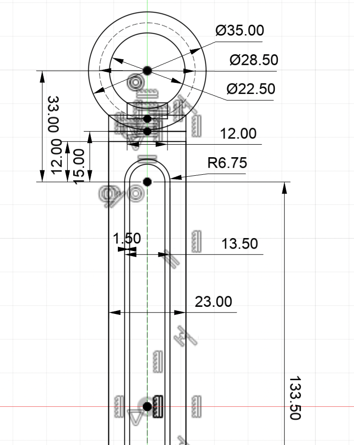
It might be best to view the raw images by going to http://URL/pages/12_project/img/
Beyond that, CAD I needed to rig up everything like how I described above, which made use of the new component I built. I made sure to crimp some little connectors on the actual conductive components for my resistance sensor, and then add a plastic layer on top with cheap glue to make sure it doesn't fall out while people fiddle around with it. In this case, the project was a success because after a lot of soldering I was able to get it to work.
However, this brings me to the second limitation for the ESP32 XIAO C3. In this case, whenever I try to control the frequencies or sounds, there is a delay from the actual music coming out, likely from the ESP32 overheating or generally overusing its resources to its maximum capacity, producing a delay. As such, here is one of the demos which exhibits this issue:
While the video shows the entire project and how it looks it also showcases the delay. One small fix was to sort of ensure that it cooled down, but also making sure to switch ports occasionally and to reset the actual board when it needed to be reset. Here is a more comprehensive video which demonstrates it working in its full action:
Besides that I have also provided the code for the actual project down below as well:
int strip = D0;
int sound = D1;
int factor = 1;
long prevMillis = 0;
long prevSensor = 0;
void setup() {
Serial.begin(9600);
prevMillis = millis();
prevSensor = analogRead(strip);
}
void loop() {
int currSensor = analogRead(strip);
int factor = analogRead(D2);
factor = map(factor, 0, 4095, 1, 8);
Serial.println(factor);
currSensor = map(currSensor, 0, 750, 200, 800) * factor;
Serial.println(currSensor);
if (!(currSensor < 230*factor)) {
tone(sound, currSensor);
}
delay(5);
prevSensor = currSensor;
prevMillis = millis();
if (millis() - prevMillis > 5000 || currSensor < 230*factor) {
Serial.print("\tNInterval");
noTone(sound);
} else {
Serial.print("\tInterval");
if (!(currSensor < 230*factor)) {
tone(sound, currSensor);
}
delay(5);
}
Serial.print("\n");
}